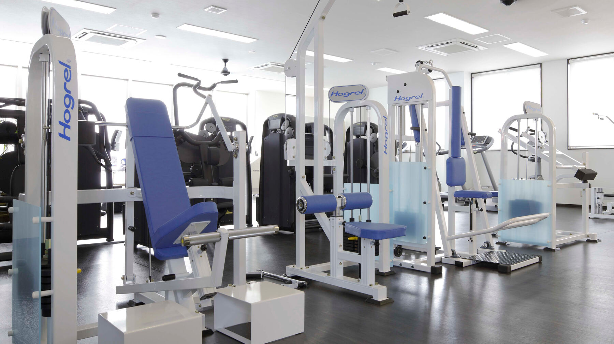

入会時にご用意いただくもの
- 入会金
- 月会費（２か月分前納）
- 身分証明書 （免許証，保険証，学生証など）
- 金融機関通帳、届出印鑑
- 月会費は毎月27日に指定口座より、翌月分が自動引き落としとなります。
- 月会費の引き落としは(株)アプラスに委託しています。
- 引き落とし日が土・日・祝祭日の場合、翌営業日となります。
～ご入会からトレーニングまでの流れ～
- 入会に必要なものをご用意いただき来館
- 問診票にてスクリーニング
- リスクがある場合はドクターチェック
- 入会，事務手続
- オリエンテーション
- ステイタスチェック
- In Body（高精度体組成分析装置）による測定
- メディカルチェック
- 関節可動域，最大筋力測定
- 希望者には最大酸素摂取量測定
- カウンセリング
- トレーニングスタート！！
注）
スクリーニング、チェック、カウンセリングがございますため、実際にトレーニングがスタートするのは２回目以降となる場合がございます。